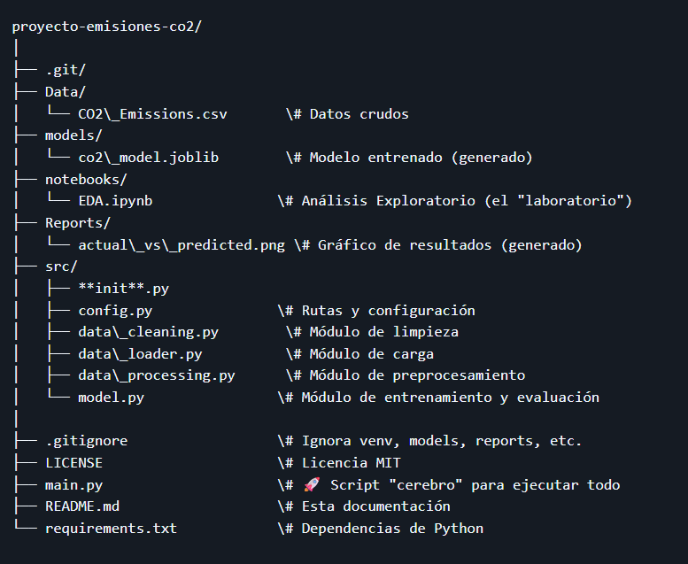

Ver en GitHub
Ver en GitHub
Predicción de emisiones CO2 de vehiculos con Regresión Lineal Multiple
Cada vehículo que circula deja una huella en el aire: las emisiones de CO₂. Reducir esa huella es un desafío global, y para lograrlo necesitamos entender qué factores la provocan. ¿Influye el tipo de combustible? ¿El tamaño del motor? ¿El peso del vehículo? Este proyecto utiliza datos reales para responder esas preguntas, construyendo un modelo que predice las emisiones de CO₂ con base en las características técnicas de cada automóvil. Más allá del modelo, el enfoque está en aplicar buenas prácticas profesionales: código limpio, estructura modular y un flujo de trabajo automatizado, como se hace en equipos reales de ciencia de datos.
Características
Este proyecto implementa un pipeline completo de Machine Learning para predecir emisiones de CO₂.
A partir de un conjunto de datos con información como tipo de combustible, cilindrada, peso y otras variables, se entrenó un modelo de regresión lineal múltiple capaz de anticipar el nivel de emisiones de cada vehículo.
El proceso incluye:
Todo el flujo está automatizado y organizado en módulos independientes, lo que permite escalar, mantener y reutilizar el proyecto fácilmente.

Tecnologías
| Python | Pandas |
| Matplotlib | LinearRegression |
Visión general
El proyecto se centra en predecir el abandono de clientes en telecomunicaciones mediante modelos de machine learning, transformando datos en predicciones confiables que apoyan estrategias de retención y mejoran la rentabilidad empresarial.

Resultados Obtenidos
El proyecto logró resultados que demuestran tanto la precisión del modelo como la calidad de la implementación:
El modelo logró un resultado muy alto de precisión, alcanzando más del 90% de aciertos en sus predicciones. En otras palabras, ofrece información confiable que refleja de manera clara la realidad analizada.
✅ Predicciones confiables: El modelo de regresión múltiple obtuvoalcanzó un margen de error muy bajo (RMSE ≈ 34.57), lo que refleja su capacidad para aproximarse a los valores reales de emisiones de CO₂.
🎯 Consistencia en el desempeño: Con un MSE de apenas 5.87, el modelo muestra estabilidad y solidez en sus estimaciones.
📈 Visualización clara: El grafico generado permite comparar de forma intuitiva los valores reales frente a los predichos, mostrando cómo el modelo captura las tendencias principales.
🧩 Arquitectura profesional: La separación en módulos (data_loader, data_cleaning, data_processing, model) y la automatización con main.py garantizan reproducibilidad y escalabilidad, como en proyectos de la industria.
🚀 Impacto potencial: Estos resultados no solo validan el modelo, sino que demuestran cómo los datos pueden convertirse en herramientas prácticas para apoyar decisiones en sectores como la industria automotriz y la gestión ambiental.